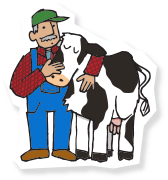
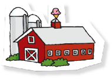
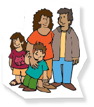

ABOUT COMPANY
-
브랜드를 운영하는 방법
-
INTRO
-
번영의 중심
“BEN&JERRYS”-
 CHAP 1
재료 소싱 및 구입 관행
-
 CHAP 2
제조 관행
-
 CHAP 3
주민 지역사회 및 환원 관행
-
-
CHAP1
-
제조 관행
-
CHAP2
-
재료 소싱 및 구입 관행
-
우리는 탄소 발생량을 줄이기 위해 사업 전반에
걸쳐 노력하고 있으며, 그 노력이 얼마나
성과를 내고 있는지 해마다 발표하고 있습니다. -

폐쇄형 순환 시스템을 만들기 위해 버몬트 공장에서
나온 유제품 폐기물을 받아 우리에게 신선한
유제품 원료를 공급해주는 농장으로 보냅니다.
폐기물은 메탄 소화조에 저장하고 농장에
공급할 에너지로 만들어 냅니다.
-
깨끗한 아이스크림을 만들기
위해선 냉동고도 깨끗해야 합니다.
우리의 냉동고는 한층 더 환경 친화적이고
에너지 효율성도 더 좋습니다.
-
우리의 종이 포장지는
국제산림관리협의회으로부터 인증을 받았습니다.
이 인증은 야생동물과 다양한 생물의
지속 가능성을 보호했다는 것을 의미합니다.
-
-
CHAP3
-
사람과 지역단체
-
CHAP3